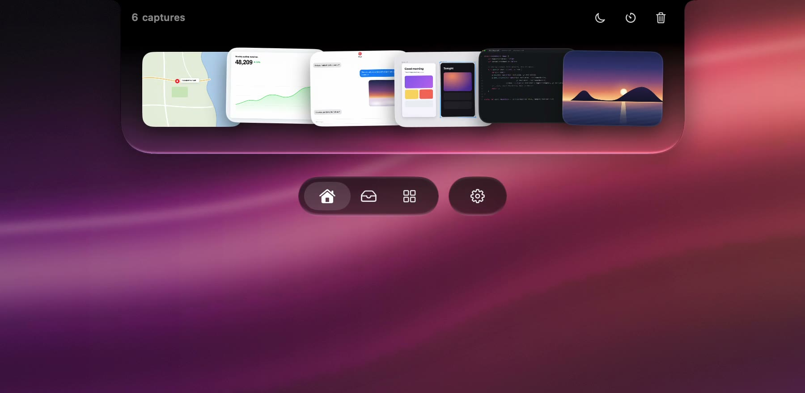
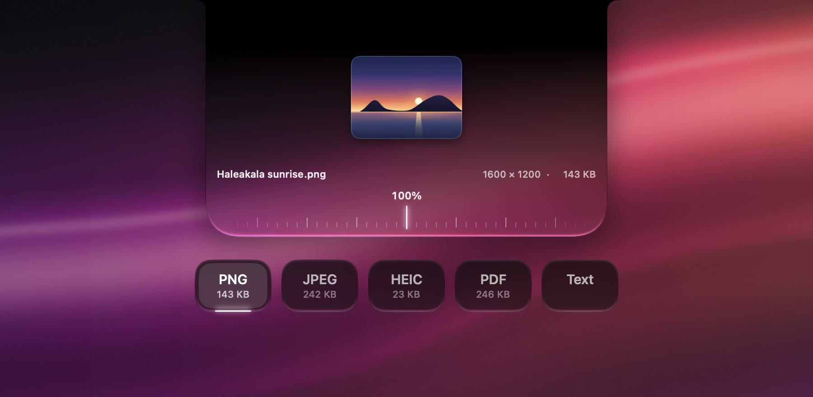
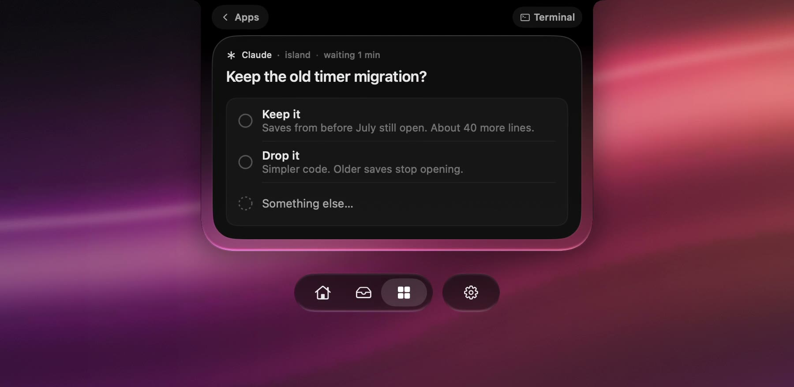
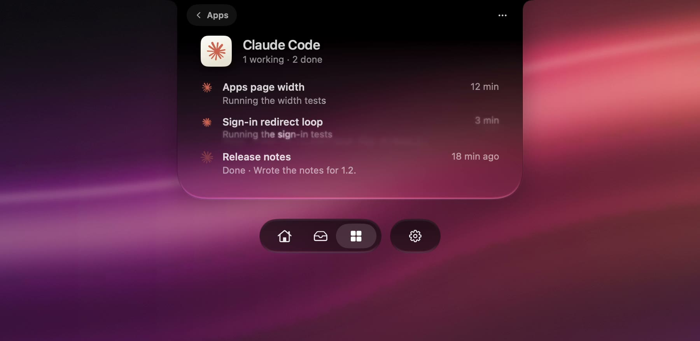
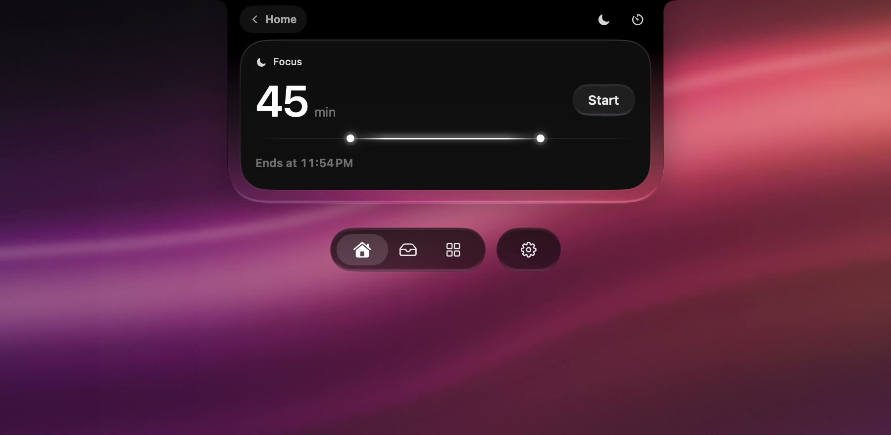
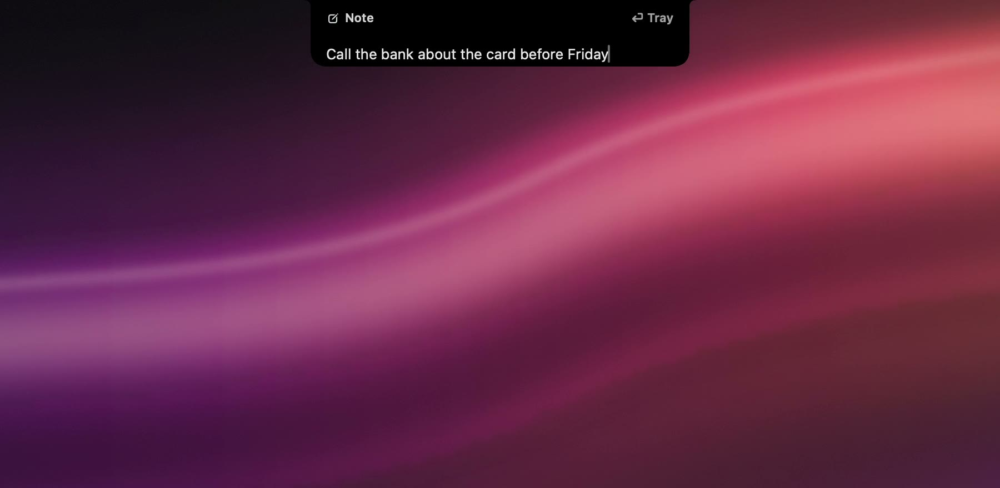
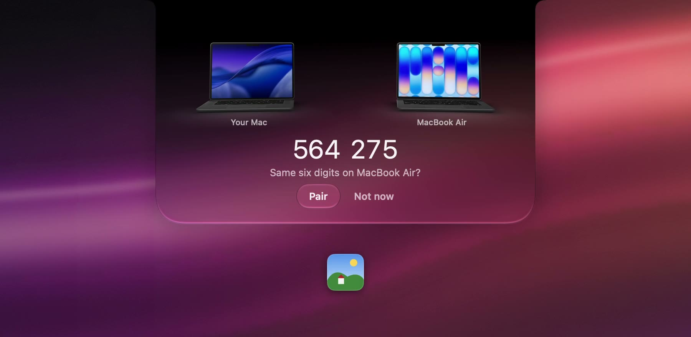
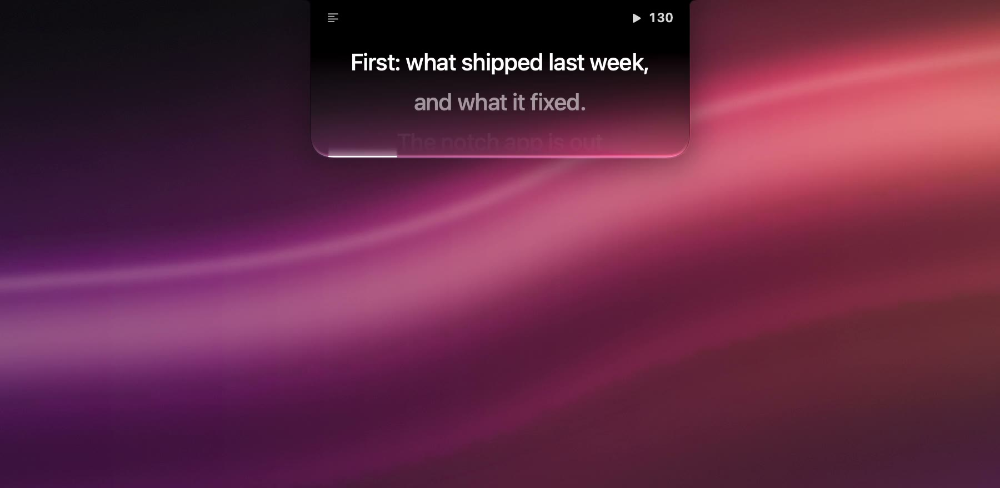
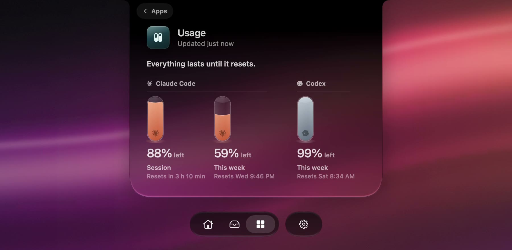
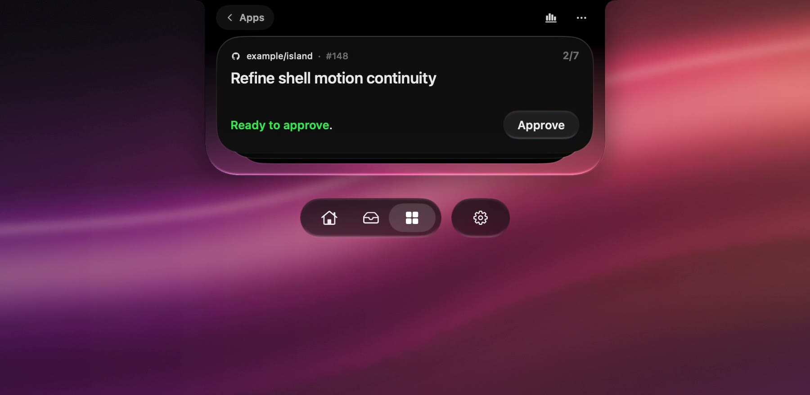

Maui
A small friend for the notch of your Mac. It keeps your screenshots, holds the files you drop on it, and brings your coding agents’ questions to you.
Download, freemacOS 26 or later · Apple silicon
Screenshots.
Every screenshot lands in the notch. Drag one anywhere, or ⌘-click a few and drag them together.
- The notch, closed
- It peeks when you point at it
- Click: your screenshots
- The notch closes

Files.
Drop a file on the notch. Keep it in your Tray, send it to your other Mac, or convert it to another format, or to its text.
- A file held over the notch
- Keep, Send or Convert
- Convert
- Choose a size and a format

Agents.
Claude Code asks; you answer at the notch. The question opens a little beside the camera. Pick an answer and Claude carries on. Codex’s command approvals come here too.
- Claude is working
- Claude asks
- You answer
- Claude carries on

Sessions.
See what your agents are doing. Each Claude Code and Codex session in a line: what it’s working on now, and what it finished.
- Each session, in its own words

Focus.
Start a focus session, and Maui keeps it quiet. Questions from your other projects wait until it ends, as drops of light on a line that shows the time left.
- Pick a length, then Start
- The line lands on the notch, then goes dark
- A question from another project, held
- And another
- A glance: the time left, and what waits
- The line runs out
- Two waited
- Now they come to you

Notes.
Press ⌃ ⌥ N in any app. Write one line and press Return. It’s kept in the Tray.
- In any app
- ⌃⌥N opens a note
- Write one line
- Return keeps it
- It’s in the Tray

Two Macs.
Send it to your other Mac. The first time, you check that both Macs show the same six digits.
- Send, to MacBook Air
- Which Mac?
- The first time: the same six digits
- Paired
- It’s on MacBook Air

Read.
Read your notes under the camera. On a call they scroll right below the lens, so you keep looking at people.
- Your notes, right under the camera

Usage.
See how much of your week is left. Your Claude Code and Codex limits as glass vials, and when they reset.
- The vials sit beside the date
- Your week, in full

GitHub.
Approve and merge from the notch. Your pull requests, one card at a time, checked against the exact commit you saw.
- GitHub, beside your screenshots
- A review is waiting
- Approve it from the notch

Say hi.
Maui is free. No account, nothing to sign up for. Made with care by one person.